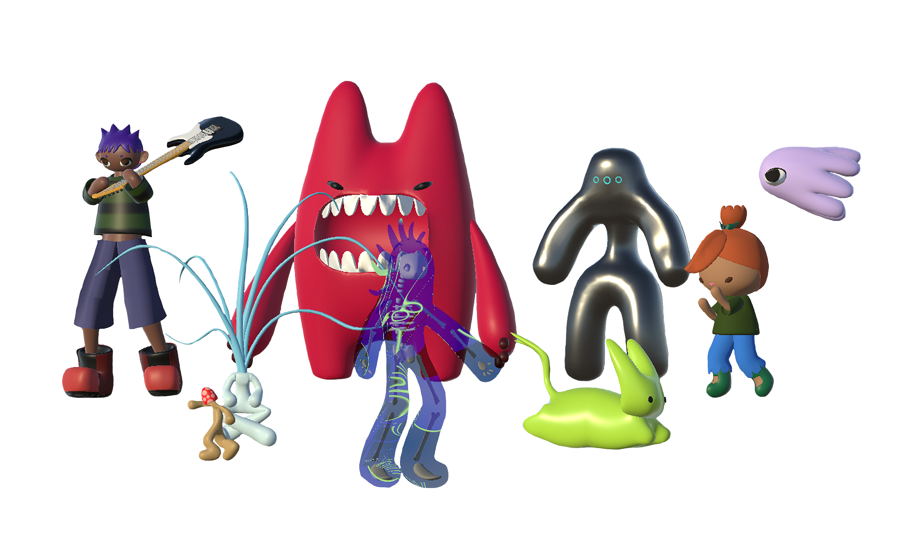
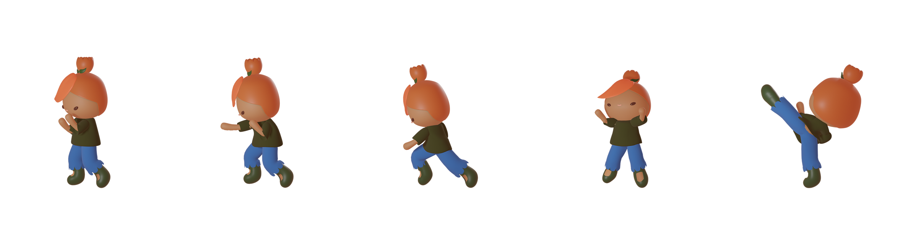
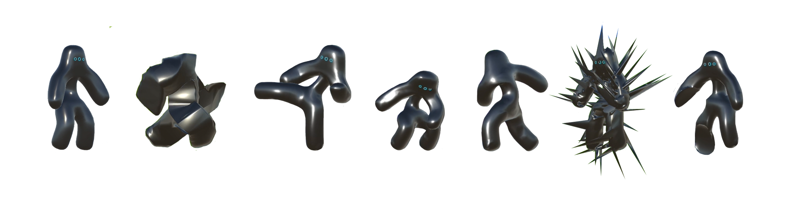
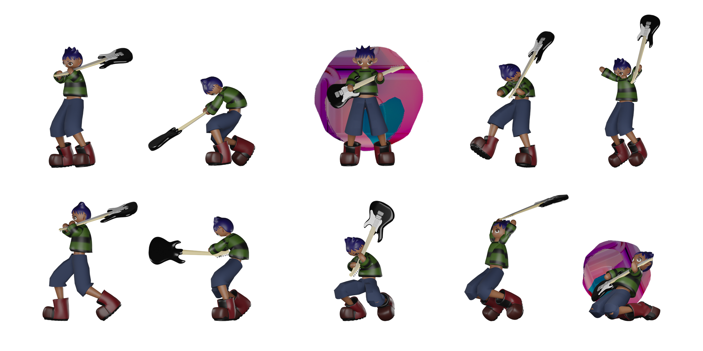

Demo
Abstract
de-generate is an experimental fighting video game that explores how generative art may permeate as not only a technological aesthetic, but an essential component in gameplay and game evolution. Primarily realized through generative characters, digital beings and their core structural code may be intercepted and facilitated by the player, resulting in new, adaptive, and expressive experiences. As shape shifting avatars, generative characters maximizing the capabilities of the digital realm.
Introduction
Interfaces, as they have been traditionally established, firmly place human intention and raw computation at opposite ends of the screen. While functionally efficient, this separation between collaborators limits the infinite potential of digital expression. Interfaces that push backend capabilities to the forefront will empower users to shape their own digital inhabitance with flexibility, sovereignty, and longevity.
de-generate postulates what such interfaces may entail through an experimental hybrid of generative art (the approach) - and video games - the medium. Featuring computationally unbounded characters, de-generate makes full use of its algorithmic makeup with generative meshes, movements, and game functions. Attributed by a sense of emergence, generative characters have been coded as such - to exist - not to operate. The fundamental structure may be harnessed and altered alongside player input, leading to emergent gameplay that cannot be predicted.
Video games as the medium, provides the perfect environment for exploring new digital emergence due to their controlled system, interdisciplinary components, and real-time participation. With all factors accounted for, de-generate’s character focused format cleverly disguises what is otherwise, user testing of the generative dynamics. While video games commonly rely on predefined game beats, de-generate explores how generative discovery may replace simulated gaming dynamics with actual computation.
What meta game emerges from the chaos, is entirely unknown, and is itself a generative process. As such, all development of a meta game has been relinquished to participators of the game. How players adopt strategies and tactics outside the core gameplay mechanics, especially when involving exploitation of what may be ‘wrong’ with de-generate, is essential in realizing the project’s core themes of autonomous digital inhabitance.
Departing from established interfaces, de-generate offers a new way of exploring digital reality, and presents an exciting example of how digital interfaces may maximize human extension into computation.
Full Thesis Document: kahaniploessl.github.io/deGeneratePaper.pdf
Characters
tulip
tulip is de-generate's baseline character, meaning they do not employ any generative technique. Instead, tulip serves as a comparitive refence, establishing what standard characters entail, and more importantly, how generative mutations disrupt the norm.
Generative Deformation
Within phase 1 of de-generate, the primary genereative techniques explored is a process of generative mesh deformations. This method involves storing all vertices of an object in an array, manipulating them within a C# script alongside real time events, and then updating these changes to the corresponding game objects. Manipulation occurs by instantiating either an artificial or reactive force, meaning deformations may be both active and reactive. Furthermore, coding how each verticy responds to the instantiated force resulted in several expressive experimental deformation. Repressenting this range of applications, the 4 folowwing characters each exmplify a unique reinterpretation of the base function.
metalMan
As the name implies, metalMan’s mesh deformations are elementally inspired by the malleability of metal. This is indicated by three main state features: sharp attacks, defence armour, and reactive denting. Sharp attacks enabled by Spikey at a randomly generated frequencies and force vectors erupt from metalMan’s surface. Defensive armour, rapidly expands a Bound enabled mesh, increasing defence but drastically decreasing speed. And lastly, localized and semi-permanent deformations achieved with a low Spread Percent and Elasticity set to zero, occur in reaction to received attacks. These new deformations may be utilized in regular attack moves, but will disappear when the player switches to another state.
plasMan
plasMan uses experimental mesh deformation variables for visualizing chaotic plasmic energy. This effect, applied abstractly to the outer body, is juxtaposed overtop a rigid skeleton. Here generativeness is used for charging and expelling bursts of energy. Player inputs may be stockpiled into perpetual mesh deformations reused in energy attacks, such as shooting plasma balls or energy bursts deformations.
slimeCat
slimeCat introduces generative authorship as a moldable character. Here slimeCat’s shape can be squished, expanded, and puddled to player liking, strategy, random generative elements, or in reaction to in game events. Squishing applies convex of concave deformations (depending on vector direction). Expansion scales up slimeCat with ballooning deformation. And puddle enables Wobble to melt slimeCat into a hard to hit state. These deformations alter the backend mesh and collider, enabling each transformation to redefine how slimeCat interacts with other characters. For example, a larger slimeCat may be more powerful and likely to land an attack, however at this size, they’d also make an easier target.

rockerChic
rockerChic is the simplest generative character, with their mesh deformation, the smashing of their guitar, performing in reaction to the player’s own destruction. Upon entering the opponent’s collider, the guitar breaks with a low Spread Percentage, Elasticity set to zero, and Indent enabled, meaning deformations are localized, permanent, and brittle. The guitar’s acquired damage can then be reutilized in a “rock out” move, in which rockerChic plays the guitar to project a generative music attack.
Future Characters

hellBear, mushGang, swarmOfSquids
hellBear, mushGang, and swarmofSquids will be introduced in the next phase of de-generate. These characters employ a much different appraoch to generetaive character design with genereative spawns and mathematical surfaces and movement. More specifically, hellBear shoots generative flames, spawned from their mouth. mushGang introduces AI controlled mushroom minion spawns. And lastly, swarmOfSquids involves several spawned squids that move generativelt in relation to one another.